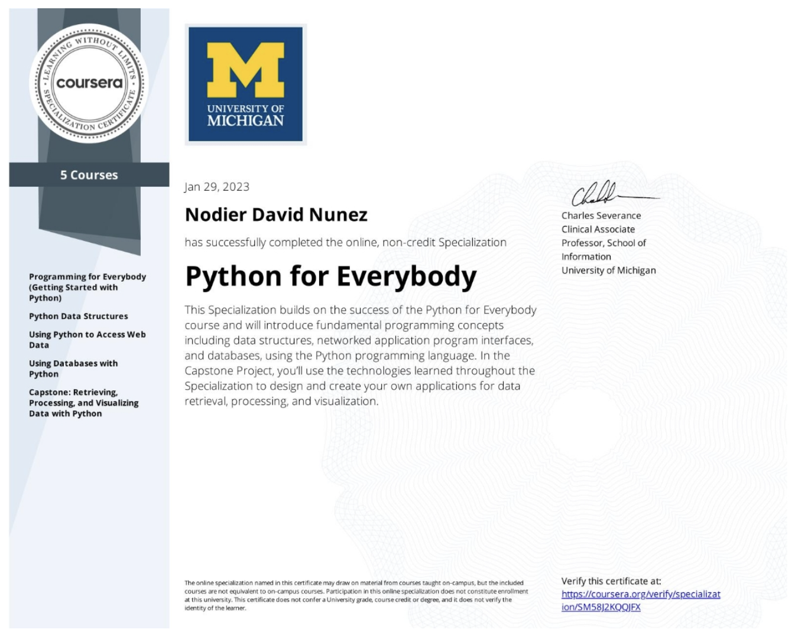

Nodier Nunez
To be a Web Developer
You don't need a paintbrush to create art. You just need a little bit of code.
Objective Statement
My goal is to be a successful Web Developer, and no matter how difficult the path to success may be, I'll get there.
Education
- High School Degree
- Braddock Senior High - Miami, FL
- Graduation Class of 2011
- Some College Education
- Online Course Education (ongoing)
- Online Digital Art Program
- Coursera
- Udemy
Skills
- Bilingual, Spanish
- Excellent customer service and communication skills
- Ability to multi-task and problem solve
- Ability to perform under stressful conditions
- Proficient computer software skills
- Proficient computer hardware knowledge capable of building a PC
- Programming
- JSON
- XML
- Python Programming
- Database (DBMS)
- Web Development
Work Experience
Macy's
Sales Associate / October 2012 - December 2014
- Demonstrated customer service and selling skills
- Recommended products and assisted with locating products based on customer requests.
- Processed purchases/returns at the cash register quickly and efficiently.
- Closed and balanced the register at the end of business hours.
- Met daily and weekly sales quotas and credit card application goals.
Bed Bath & Beyond
Sales Associate / March 2015 - September 2016
- Demonstrated customer service and selling skills.
- Recommended products and assisted with locating products based on customer requests.
- Processed online orders and phone calls in-store.
- Replenished products on the floor from inventory as needed.
- Worked in multiple departments, including stockroom shifts.
- Retrieved and collected shopping carts at the end of business hours.
Sherwin Williams
Driver / April 2017 - November 2017
- Operated machinery such as forklifts, paint mixers, and company trucks.
- Assisted with customer paint-mix orders in person and over the phone.
- Delivered large quantities of paint to construction sites, businesses, and homes with company vehicles.
- Assisted in other departments when needed and short-staffed.
Road America
Customer Care Representative / January 2018 - November 2021
- I started as a Roadside Assistance Coordinator.
- Received inbound calls from stranded insured's in need of roadside assistance.
- Gather breakdown location and additional information to equip our providers better and be dispatched.
- Call and dispatch providers in the breakdown area to quickly assist the insured.
- Call and dispatch the local police in their breakdown area to ensure their safety on the highway.
- Promoted to Customer Service Representative within only a couple of weeks of hire.
- Received inbound calls that vary from insureds who need insurance information or file a complaint.
- Worked on escalated cases that required careful research.
- Listened to recorded phone calls between the insureds, our providers, and our Roadside Assistance Coordinators to gather information and build a case against the party at fault.
- Report case findings to clients via email and compensate insureds when our providers are at fault.
- I worked in Quality Assurance.
- Reviewed employee call-handling skills and graded employees based on their performance according to our guidelines.
- Reported findings to management and issued coaching and disciplinary actions to Roadside Assistance Coordinators.
- Worked in Calibrations Department
- Coordinate with our clients and their Calibrations Team to review calls and ensure our services meet their standards and are aligned with their vision.
- Adapt our services to the vision of the clients if necessary.
- Change and update our policies and guidelines based on our client's vision and needs.
- Assisted the company in the revision of our entire Roadside Assistance guidelines and re-train our Roadside Assistance Coordinators.
MAPFRE Insurance
Billing Consultant / November 2021 - August 2022
- Received calls from MAPFRE insureds and assisted with their Auto and Home billing inquiries, and payments.
- I later worked in the Auto Services department to assist Insurance Agents and Dealership Representatives with their inquiries.
Certifications and Achievements
- Python for Everybody Specialization Certification

- PCEP Certication